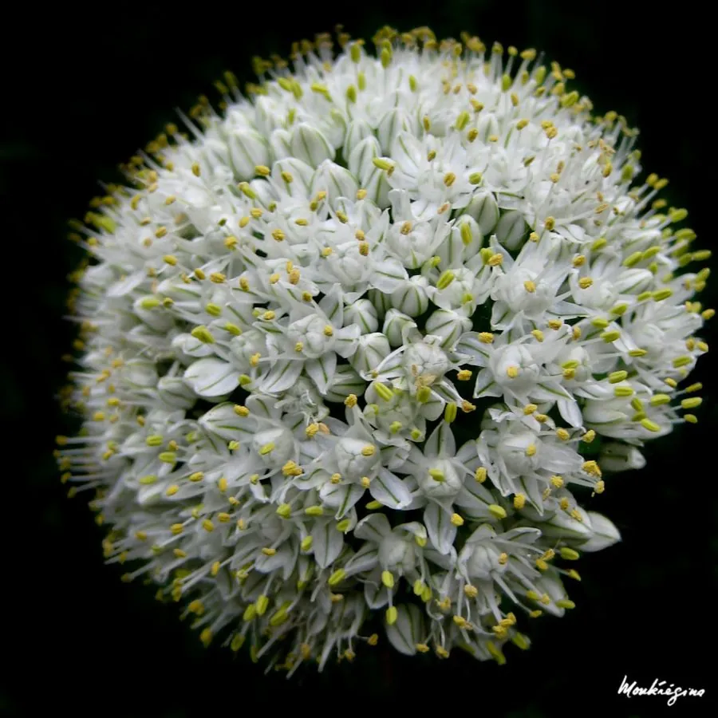

农作物与经济植物 · 植物界
洋葱 Allium cepa

洋葱的鳞茎富含糖分和含硫化合物，可鲜食、炒食或加工成洋葱粉，耐储运，是世界性的重要蔬菜作物。
- 分类
- 门被子植物门纲单子叶植物纲目天门冬目科石蒜科属葱属
- 栖息环境
- 温带与亚热带的菜地，喜凉爽、光照充足与排水良好土壤
- 地理分布
- 原产中亚与西亚，现主产于中国、印度、美国、埃及等地
- 保护级别
- 暂无评估（栽培作物）
物种志
洋葱是石蒜科一二年生草本，株高 0.6–1 m。叶片圆筒形、中空，表面有蜡粉，叶鞘抱合形成假茎。地下鳞茎球形或扁球形，由多层肥厚的鳞片抱合而成，外皮有紫红、黄白等色。伞形花序顶生，花小、白色，但栽培上多用种子繁殖。
洋葱原产中亚与西亚一带，栽培历史已有 5000 多年，是世界上最古老、种植最广的蔬菜之一。它喜凉爽、光照充足，适宜在疏松肥沃、排水良好的土壤中种植，鳞茎膨大期需要较长光照和较高温度。洋葱的鳞茎富含糖分、维生素和含硫化合物，切开会释放丙硫醛 S-氧化物，刺激眼睛流泪；可鲜食、炒食、做汤或加工成洋葱粉、洋葱油。洋葱耐储运，是重要的出口蔬菜。中国是世界上最大的洋葱生产国之一。
形态与习性
- 株高0.6–1 m
- 叶圆筒形中空，有蜡粉
- 鳞茎球形或扁球形，外皮紫红或黄白
- 繁殖多为种子繁殖
- 用途鲜食、炒食、洋葱粉
- 耐储性强，适合储运
趣味知识
- 切洋葱时释放的含硫物质会刺激眼睛，让人流泪。
- 洋葱的鳞茎由多层肥厚鳞片抱合而成，非常耐储运。
- 中国是世界上最大的洋葱生产国之一。